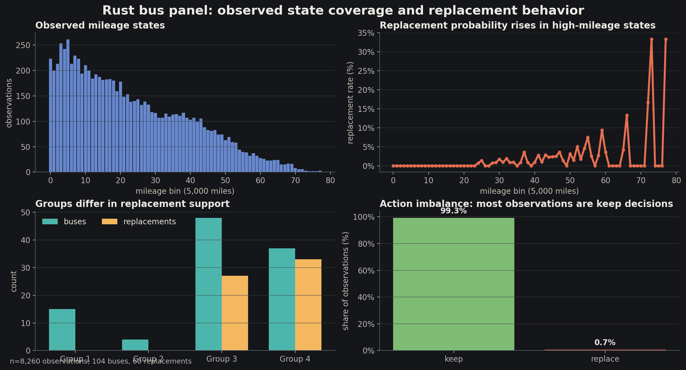
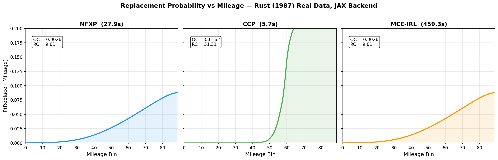
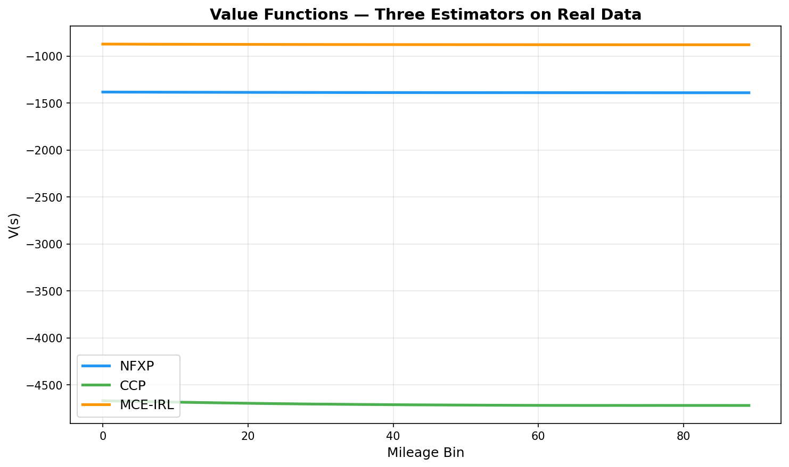
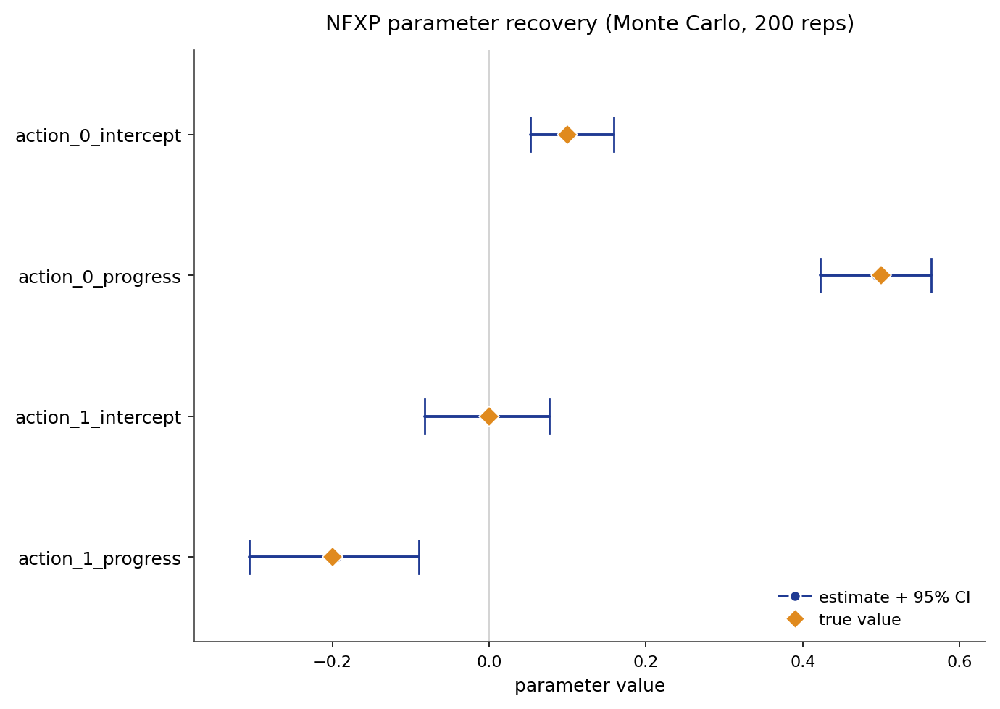
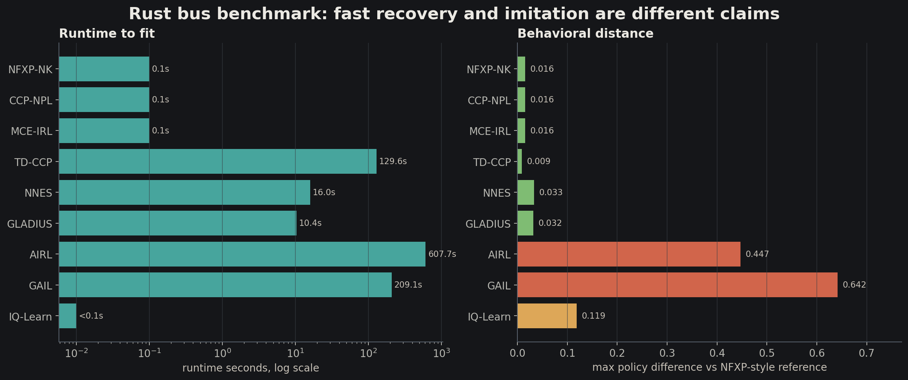
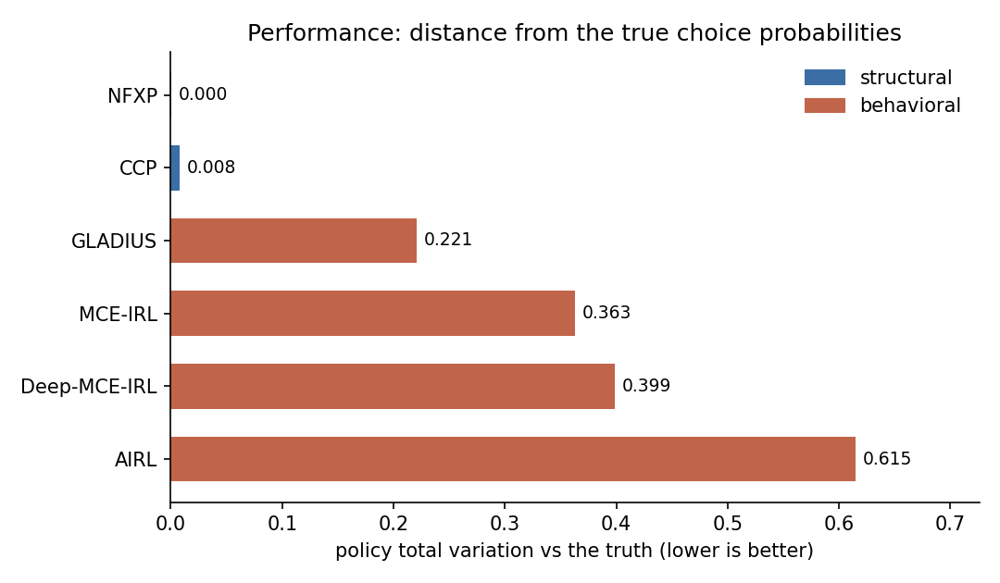
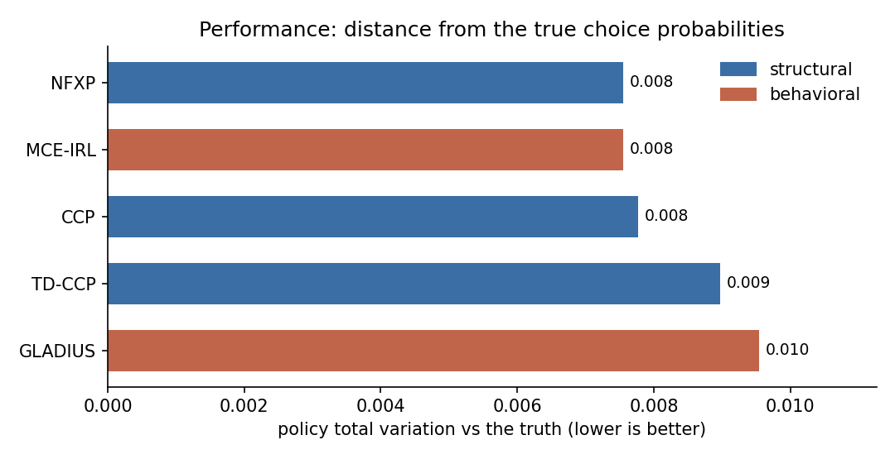
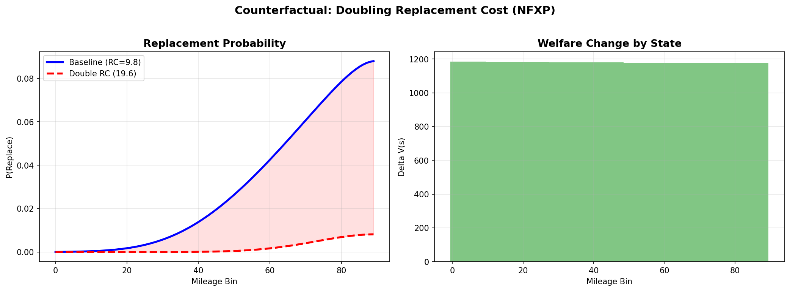
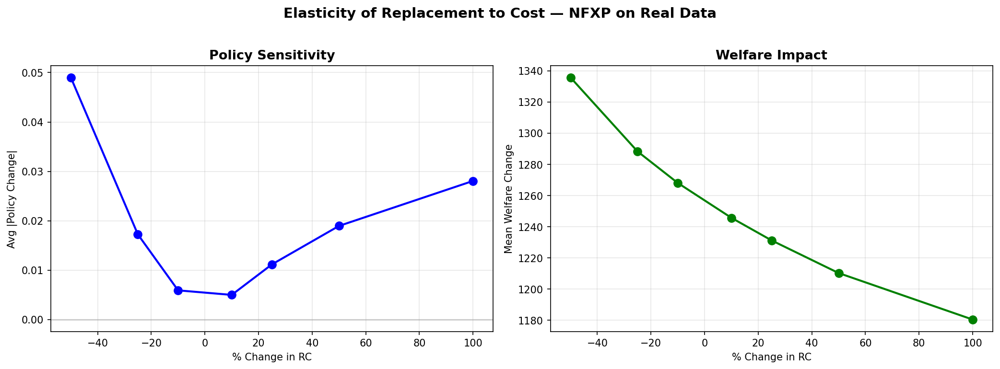

Definitions, algorithms, diagnostics, and counterfactuals
Given trajectories of states and actions, infer the reward, policy, and value objects that make those trajectories rational under a dynamic decision model.
STYLE This is a formal map, not a proof. Each slide states the object, the algorithm, or the obstruction.
We will state - model objects - assumptions - objective functions - algorithm inputs and outputs - diagnostics and counterexamples
We will not do - derivations of fixed-point theorems - asymptotic inference proofs - optimizer implementation details - benchmark theater without failure modes
\[ D \xrightarrow{\text{estimator + assumptions}} \widehat{\theta} \xrightarrow{\text{Bellman solve}} (\widehat{Q},\widehat{V},\widehat{\pi}) \xrightarrow{\text{primitive edit}} \pi_{cf} \]
Meaning A structural counterfactual is only as good as the estimated primitive object that survives the edit.
IID choice model \[ \Pr(a_t \mid x_t) \] The action is a response to current covariates.
Dynamic choice model \[ \Pr(a_t \mid s_t), \qquad s_{t+1}\sim P(\cdot\mid s_t,a_t) \] The action changes the next problem instance.
Definition 1 A controlled Markov process is a tuple \[ M = (S,A,P,\beta) \] where \(S\) is a state space, \(A(s)\) is the feasible action set, \(P(s'\mid s,a)\) is a transition kernel, and \(\beta\in(0,1)\) discounts future payoff.
The word Markov is a compression claim: the chosen state must contain the past information needed for prediction and payoff.
Definition 2 A reward specification is a parametric map \[ r_\theta:S\times A\to R,\qquad r_\theta(s,a)=\theta^\top f(s,a) \] or a structured nonlinear map whose parameters retain a declared interpretation.
Failure mode An arbitrary reward approximator can predict behavior while failing to define a stable primitive for policy edits.
\[ \pi(a\mid s)\in \Delta(A(s)) \]
\[ V^\pi(s)=E_\pi\left[\sum_{t\ge 0}\beta^t r(s_t,a_t)\mid s_0=s\right] \]
Definition 3 The policy is the behavioral object. The value is the future-inclusive payoff of starting from a state.
Data \[ D=\{(i,t,s_{it},a_{it},s_{i,t+1})\}_{i=1,\ldots,N;\ t=1,\ldots,T_i} \]
Panel content - state before choice - chosen action - next state - optional covariates and agent ids
What is not observed - private shocks - full reward - value function - rejected action outcomes
This is why dynamic choice is not a classifier with a fancy loss.
Operator For logit shocks with scale \(\sigma\): \[ Q_\theta(s,a)=r_\theta(s,a)+\beta\sum_{s'\in S}P(s'\mid s,a)V_\theta(s') \] \[ V_\theta(s)=\sigma\log\sum_{b\in A(s)}\exp(Q_\theta(s,b)/\sigma) \]
The fixed point turns primitives into choice probabilities.
\[ \pi_\theta(a\mid s)= \frac{\exp(Q_\theta(s,a)/\sigma)} {\sum_{b\in A(s)}\exp(Q_\theta(s,b)/\sigma)} \]
Interpretation The stochastic policy is not a behavioral afterthought. It is the observable implication of the solved dynamic program.
Latent utility \[ U(a,s)=Q_\theta(s,a)+\epsilon_a \] With extreme-value shocks, choice probabilities become softmax.
The shocks explain why identical observed states need not produce identical actions.
\[ \ell(\theta;D)=\sum_{(i,t)}\log \pi_\theta(a_{it}\mid s_{it}) \]
Estimation claim Maximizing this likelihood is meaningful only after the state, action set, transition model, reward specification, and shock normalization have been fixed.
Proposition 1 If two parameter vectors induce the same conditional choice probabilities on the observed support, then the data cannot distinguish them without additional restrictions.
The estimator is only as formal as its identification restrictions.
Assumption A1 For all histories \(h_t\) compressed to the same state \(s_t\): \[ \Pr(s_{t+1},a_t,r_t\mid h_t)=\Pr(s_{t+1},a_t,r_t\mid s_t) \]
Diagnostic If residual transition errors depend on omitted history, the state is not sufficient.
A state is an algorithmic summary, not a spreadsheet column.
Assumption A2 For any state-action pair used by estimation or counterfactual simulation: \[ \Pr_D(s,a)>0 \quad\text{or}\quad (s,a)\ \text{is covered by a justified model extrapolation} \]
Failure CCP-style methods become unstable when the estimated policy assigns near-zero probability to actions needed for inversion.
Assumption A3 The feature matrix must vary across feasible actions: \[ \operatorname{rank}\{f(s,a)-f(s,a_0):s\in S,\ a\in A(s)\}>0 \]
Features that do not change the action comparison cannot identify choice tradeoffs.
Counterfactual validity condition A counterfactual policy edit is interpretable only if the edited model preserves the primitive reward, transition, and choice-shock objects that were meant to remain stable.
\[ M_{\hat\theta}=(S,A,P,r_{\hat\theta},\beta,\sigma) \quad\leadsto\quad M_{cf}=(S,A_{cf},P_{cf},r_{cf},\beta_{cf},\sigma) \]
Assumption A4 Utilities are identified up to normalizations. Scale and location must be fixed before comparing parameter magnitudes.
\[ r'(s,a)=r(s,a)+c \]
\[ r'(s,a)=\alpha r(s,a),\quad \sigma'=\alpha\sigma \]
Without normalization, “larger reward” can mean “different unit.”
Counterexample 1 Potential-based shaping can preserve optimal behavior: \[ r'(s,a,s')=r(s,a,s')+\beta\Phi(s')-\Phi(s) \] while changing apparent per-period rewards.
Policy equivalence is not reward uniqueness.
NFXP Solve the dynamic program inside each likelihood evaluation.
CCP / NPL Use estimated choice probabilities to bypass or approximate repeated solves.
IRL Recover reward from demonstrations, often through moments, entropy, or adversarial objectives.
Algorithm 2
NFXP nests Algorithm 2 inside an optimizer over \(\theta\).
Target \[ \widehat{\theta}_{NFXP} \in\arg\max_\theta \sum_{(i,t)}\log \pi_\theta(a_{it}\mid s_{it}) \] subject to the Bellman fixed point that defines \(\pi_\theta\).
Strength If the primitives are correctly specified and the optimizer succeeds, the counterfactual object is directly available.
Rust-style model State is mileage. Actions are keep or replace. Replacement resets the state and pays a fixed cost.
\[ r_\theta(s,\text{keep})=-c\cdot s, \qquad r_\theta(s,\text{replace})=-RC \]
The model is small enough to see every moving part.

Observed support and action imbalance. This is a diagnostic for whether the inverse problem is well conditioned.

Policy curves are the observable implication of estimated primitives, not an end in themselves.

The value graph checks whether the solved dynamic program has a coherent continuation-value geometry.
| Object | Reference | EconIRL | Diagnostic reading |
|---|---|---|---|
| Replacement cost | large negative utility | matched scale | fixed cost recovered |
| Mileage cost slope | small negative slope | matched sign | state cost recovered |
| Policy shape | monotone replace | monotone replace | dynamic logic visible |
The table is intentionally read as object recovery, not as decorative benchmarking.

Known-truth recovery is the sanity check that the estimator is not merely fitting observed labels.
State Does \(s\) predict transitions and payoff-relevant behavior?
Transition Is \(P(s'\mid s,a)\) estimated on support?
Reward Do parameters have stable units?
Solve Does the fixed point converge consistently?
Counterexample 2 If the transition kernel is fit using post-policy information that would not exist under the counterfactual, then a clean likelihood can still produce invalid counterfactuals.
The likelihood score cannot certify the data-generating invariances by itself.

Runtime is a property of the computational organization. Fit is a property of the induced policy. Both matter.
Idea Estimate conditional choice probabilities first, then invert them to recover value differences.
\[ \widehat{p}(a\mid s)\approx \Pr_D(a_t=a\mid s_t=s) \]
CCP estimators trade dynamic solves for first-stage policy estimation and support conditions.
Hotz-Miller-style statement Under logit shocks and full support, conditional choice probabilities identify choice-specific value differences up to normalization.
\[ Q(s,a)-Q(s,a_0)= \sigma\left[\log p(a\mid s)-\log p(a_0\mid s)\right] \]
Input Counts or smooth estimates of action frequencies by state.
Risk Thin cells produce unstable log odds and invalid inversions.
\[ E\left[V(s_{t+1})\mid s_t=s,a_t=a\right] =\sum_{s'}P(s'\mid s,a)V(s') \]
Computation Even after inversion, the continuation object still enters the moment or likelihood equations.
Bad sign A state-action pair appears in the counterfactual simulator but has no support in the observed CCP table.
\[ \widehat{p}(a\mid s)=0 \quad\Longrightarrow\quad \log \widehat{p}(a\mid s)=-\infty \]
Nested pseudo-likelihood NPL iterates between a policy guess and a parameter update rather than solving the full dynamic program at every outer step.
Optimization rewrite Move the Bellman equation from an inner solver into explicit constraints: \[ \max_{\theta,V}\ell(\theta,V;D) \quad\text{s.t.}\quad V=T_\theta V \]
Same mathematics, different numerical surface.
Computation Updating-value methods let optimization progress and Bellman updates interleave.
Idea Use temporal-difference structure to estimate continuation values from realized transitions.
\[ \delta_t = r_\theta(s_t,a_t)+\beta V(s_{t+1})-V(s_t) \]
This imports an RL-style value-estimation move into the CCP family.
IRL input Expert demonstrations: \[ \tau=(s_0,a_0,s_1,a_1,\ldots) \] plus a dynamics model or simulator.
IRL output A reward function whose induced policy explains the demonstrations.
Feature reward \[ r_\theta(s,a)=\theta^\top f(s,a) \]
IRL cannot recover preferences over distinctions that the feature map never encodes.
Maximum causal entropy Among policies matching expert feature expectations, prefer the highest-entropy causal policy.
\[ \max_\pi H(\pi) \quad\text{s.t.}\quad E_\pi\left[\sum_t f(s_t,a_t)\right] = E_E\left[\sum_t f(s_t,a_t)\right] \]
Statement The reward weights are dual variables for feature expectation matching.
\[ \nabla_\theta L(\theta)=\mu_E-\mu_{\pi_\theta} \]
Learning stops when model trajectories and expert trajectories agree in feature space.
State and action States are grid cells. Actions move the agent. Features encode goal proximity, walls, terrain, or risk.
The example is small, but it exposes the identifiability issue: rewards are learned only through demonstrated alternatives.

Reward learning is evaluated by induced behavior and transfer, not by whether a reward heatmap looks plausible.
Counterexample 3 Two different rewards that agree on the chosen feature expectations can be indistinguishable to MCE-IRL.
\[ \mu_E=\mu_{\pi_{\theta_1}}=\mu_{\pi_{\theta_2}} \quad\not\Rightarrow\quad r_{\theta_1}=r_{\theta_2} \]
Structured discriminator \[ D_\psi(s,a,s')= \frac{\exp(f_\psi(s,a,s'))} {\exp(f_\psi(s,a,s'))+\pi(a\mid s)} \]
AIRL is not just a classifier. Its discriminator is structured to separate reward-like terms from shaping terms.
\[ f_\psi(s,a,s')=g_\psi(s,a)+\beta h_\psi(s')-h_\psi(s) \]
g term Reward-like component.
h term Potential function that absorbs shaping.
Algorithm 6
AIRL-style transfer statement If the recovered reward is state-only and the shaping term is separated, then reward can be more stable under dynamics changes than a policy imitation objective.
Caveat This is a conditional statement. It is not a universal reward-identification theorem.
Structural tension Economic primitives often live on actions: replacement cost, entry cost, switching cost, search cost.
\[ r(s,a)=r_{state}(s)+r_{action}(a)+r_{interaction}(s,a) \]
Action-dependent rewards are useful, but they weaken the clean state-only transfer story.
Counterexample 4 If demonstrations do not include alternative dynamics or enough action support, AIRL can learn a reward-like discriminator signal that transfers poorly outside the training environment.
Adversarial training does not remove the support problem.
Purpose Approximate a hard object: \[ V_\phi(s),\quad Q_\phi(s,a),\quad r_\phi(s,a) \] when tabular state spaces or linear rewards are too small.
Risk Approximation can hide identification failures behind predictive fit.
Latent type model \[ \pi(a\mid s)=\sum_{k=1}^K w_k(s)\pi_k(a\mid s) \]
One average policy may be an artifact of several distinct decision rules.
Finite horizon approximation \[ V_H(s)=\max_\pi E_\pi\left[\sum_{t=0}^{H}\beta^t r(s_t,a_t)\mid s_0=s\right] \]
Modeling interpretation The horizon can be a computational approximation or a behavioral claim about limited planning.

Simulation-study evidence checks known-truth recovery across estimator families. Treat it as validation evidence, not as a leaderboard.
Known truth Simulation lets us ask whether the estimator recovers the data-generating parameter.
Replication Empirical replication asks whether a model reproduces published or observed behavior.
Do not conflate A clean replication plot is not proof of identification.
Definition 4 A counterfactual operator edits primitives and re-solves: \[ C_g(M_{\hat\theta}) = \operatorname{SolveBellman}(g(M_{\hat\theta})) \]
This is not a label swap and not a prediction from the old policy.

Changing the replacement-cost primitive changes the solved policy curve. The plot is evidence about the model’s implied intervention response.

The response curve summarizes a family of solved counterfactual policies.
Proposition 2 If the estimated primitives are identified on the relevant support and the counterfactual edit preserves the invariances assumed by the model, then the solved counterfactual policy is interpretable as a model-implied intervention.
Negation If support, invariance, or state sufficiency fails, the counterfactual can be precise and wrong.
Support Are edited states and actions covered?
Invariant Which primitive is held fixed?
Solve Was the model re-solved?
Report Is uncertainty separated from policy response?
\[ \text{total cost} \approx (\text{outer optimizer steps}) \times (\text{Bellman solve cost}) \times (\text{state-action size}) \]
Method choice NFXP pays in solves. CCP pays in support and first-stage error. Neural IRL pays in approximation and audit difficulty.
| Method | Object targeted | Computational shortcut | Main audit |
|---|---|---|---|
| NFXP | structural theta | none | inner solve and specification |
| CCP | same theta | invert observed policy | support and first-stage error |
| MCE-IRL | feature reward | moment matching | feature completeness |
| AIRL | reward-like signal | adversarial split | shaping and transfer scope |
| Neural variants | large-state approximations | function approximation | extrapolation and calibration |
Use NFXP when the state space is small enough and primitive interpretation is central.
Use CCP/NPL when support is rich and repeated full solves are too expensive.
Use IRL when demonstrations and feature reward recovery are the natural evidence objects.
Identifiability What equivalence class of rewards or primitives is actually identified?
Complexity Where is the fixed-point cost paid, approximated, or avoided?
Robustness Which support or invariance violation breaks the counterfactual?
Implementation map Core dynamic programming defines the operator. Estimators call it, approximate it, or invert around it.
Sanity test On a small synthetic MDP with known reward and transition kernel, the estimator should recover the induced policy and the identifiable reward object.
\[ \text{known }(r,P,\beta) \rightarrow D \rightarrow \widehat{r},\widehat{\pi} \approx r,\pi \]
Class State, action, reward, transition families.
Equivalence Reward normalizations and shaping.
Sample Support and concentration conditions.
Algorithm Approximation and optimization error.
First The data support relevant state-action comparisons.
Second The solved model reproduces observed behavior on support.
Third The counterfactual is a primitive edit followed by a re-solve.
\[ \text{dynamic choice} = \text{controlled Markov process} + \text{inverse problem} + \text{counterfactual operator} \]
The point is not to make choice theory look like RL. The point is to expose the common operator and then ask which assumptions make the inverse map meaningful.
Use these as anchors for the formal objects, not as appeals to authority.